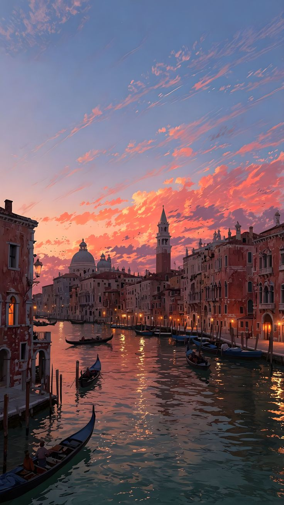
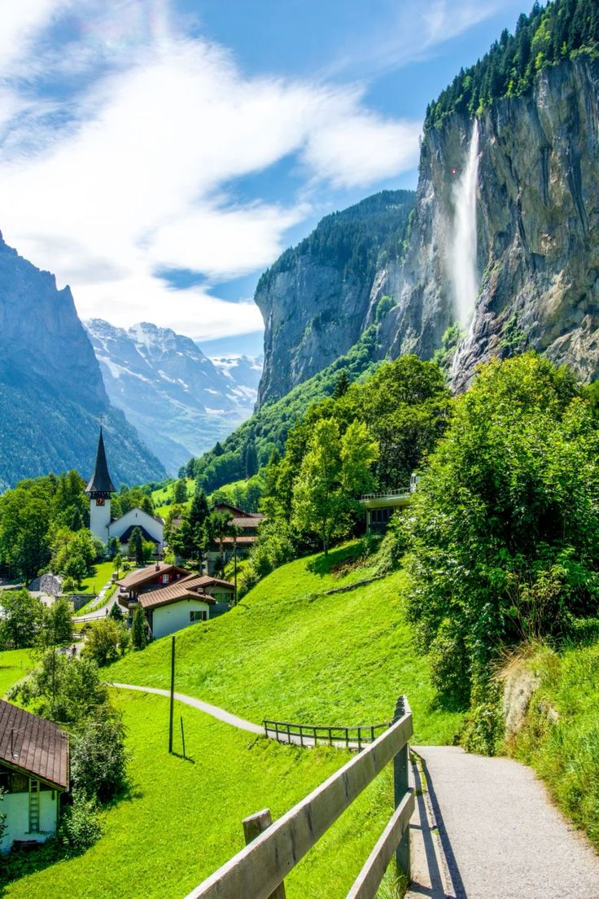

¡Hola! Soy Liz, la persona detrás de Run the World. Desde pequeña he sentido una curiosidad inmensa por el mundo: los idiomas, los sabores, los paisajes que te dejan sin aliento y las historias que viven en cada rincón del planeta. Viajar se convirtió en mi manera de aprender, crecer y conectar con lo más profundo de mí misma.
Este blog nació como un rincón donde poder guardar cada descubrimiento, cada aventura y cada lección aprendida en el camino. Pero más allá de ser un diario de viaje, quiero que Run the World sea una guía real, cercana y honesta para cualquier alma curiosa que quiera lanzarse a explorar.
Me encantan los viajes improvisados, las cafeterías escondidas, los atardeceres en lugares nuevos, y todo lo que tenga que ver con empacar una maleta con emoción. Aquí vas a encontrar desde tips prácticos hasta reflexiones sobre lo que significa viajar sola, perderse, encontrarse, y abrazar la diversidad del mundo.
Gracias por estar aquí. Si este blog te inspira, aunque sea un poquito, a tomar ese vuelo, armar esa mochila o simplemente soñar con tu próximo destino, ya habremos viajado juntas.
✨Liz✈️
| País | Ciudad | Foto |
|---|---|---|
| Corea del Sur | Seúl | |
| Japón | Tokio | |
| Italia | Venecia |  |
| Suiza | Vevey |  |